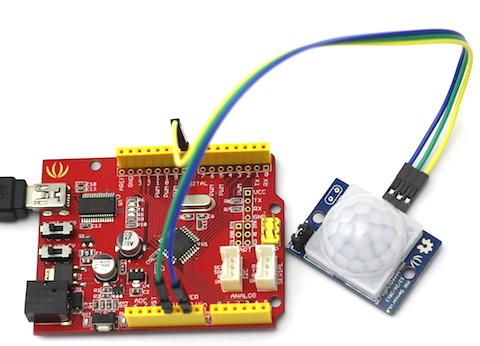

PIR（Passive Infrared Detection）are used to detect motion of human movement. This version has a large lens which can support long range and wide angle. 2.54mm standard connector is easy to fix it anywhere.
Model:SEN116A2B
The following sketch demonstrates a simple application of sensing montion. When someone moves in its detecting range, it will output High through its SIG pin and the LED will light. Otherwise, it will output LOW. Then you can use it to detect the motion of people.

Includes important code snippet. Demo code like :
/*******************************************************************************/
/*macro definitions of PIR motion sensor pin and LED pin*/
#define PIR_MOTION_SENSOR 8//Use pin 8 to receive the signal from the module
#define LED 4//the Grove - LED is connected to D4 of Arduino
void setup()
{
pinsInit();
}
void loop()
{
if(isPeopleDetected())//if it detects the moving people?
turnOnLED();
else
turnOffLED();
}
void pinsInit()
{
pinMode(PIR_MOTION_SENSOR, INPUT);
pinMode(LED,OUTPUT);
}
void turnOnLED()
{
digitalWrite(LED,HIGH);
}
void turnOffLED()
{
digitalWrite(LED,LOW);
}
/***************************************************************/
/*Function: Detect whether anyone moves in it's detecting range*/
/*Return:-boolean, ture is someone detected.*/
boolean isPeopleDetected()
{
int sensorValue = digitalRead(PIR_MOTION_SENSOR);
if(sensorValue == HIGH)//if the sensor value is HIGH?
{
return true;//yes,return ture
}
else
{
return false;//no,return false
}
}
| Revision | Picture | Descriptions | Release |
|---|---|---|---|
| v0.9b | http://www.seeedstudio.com/wiki/images/1/1c/Pir_motion_sensor_v0.9.JPG | Initial public release | Jun 08, 2009 |
| v1.0 | http://www.seeedstudio.com/wiki/images/6/62/Pir_motion_sensor_v1.0.jpg | Change the hardware design, smaller and sensitive. Supply voltage change to 3.0-5.5V | July 30, 2014 |
This documentation is licensed under the Creative Commons Attribution-ShareAlike License 3.0 Source code and libraries are licensed under GPL/LGPL, see source code files for details.
Copyright (c) 2008-2016 Seeed Development Limited (www.seeedstudio.com / www.seeed.cc){kind=link}
{kind=link}